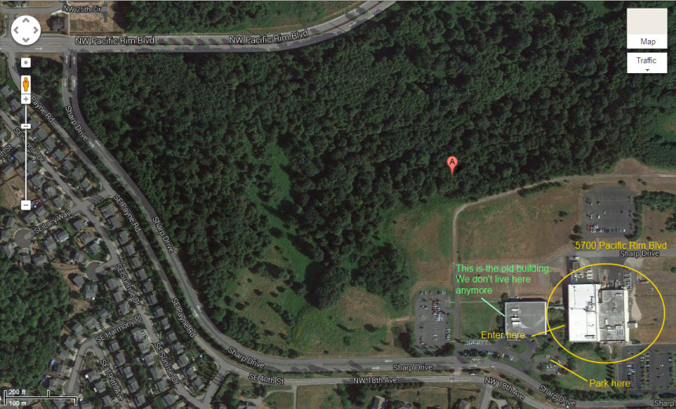

The PWG meetings will be held on August 11-12, hosted by Sharp at their facilities in Camas, WA.
Please be aware that SLA has moved into the main Sharp building at 5700 Pacific Rim Blvd (see map)
5700 NW Pacific Rim Blvd.
Camas, WA 98607
360-834-8700
Google Map
The PWG meetings will be held in the Columbia River Conference room off the reception area in the Sharp building. As you drive up the driveway to Sharp, the Sharp building is the second building and third parking lot you come to. Enter the lobby and the conference room is off to the right.
There is no registration fee for this meeting.
Please respond to the PWG August 2015 face-to-face meeting survey whether you are planning to attend the meeting in person, by phone, or not at all. This will help us plan for services and make any necessary reservations.
Call-in toll-free number (US/Canada): +1 866 469-3239
Call-in toll number (US/Canada): +1 650 429-3300
Call-in toll number (US/Canada): +1 408 856-9570
Attendee access code: (by request only)
To join the online meeting:
Note:All times are local to the venue.
Discussions at PWG face-to-face meetings are covered by the PWG Policy on Intellectual Property and Confidentiality - basically everything we discuss is non-confidential and can be included in an open standard.
| Date | Times | Description |
|---|---|---|
| August 11 | 9:00 AM to 10:15 AM | Plenary (Slides) |
| 10:15 AM to 10:30 AM | Break | |
| 10:30 AM to 12:00 PM | 3D Printing BOF (Slides · White Paper) | |
| 12:00 PM to 1:30 PM | Lunch | |
| 1:30 PM to 5:00 PM | IPP (Slides · IPP/2.0 · IPP System Service) | |
| August 12 | 9:00 AM to 12:00 PM | Semantic Model (Slides) |
| 12:00 PM to 1:30 PM | Lunch | |
| 1:30 PM to 5:00 PM | IDS (Slides) |
Marriot SpringHill Suites (ask for the Sharp rate)
Heathman Lodge
Lunch will be available for purchase in the Sharp Labs cafeteria and at nearby restaurants, including (aside from the usual fast food places):